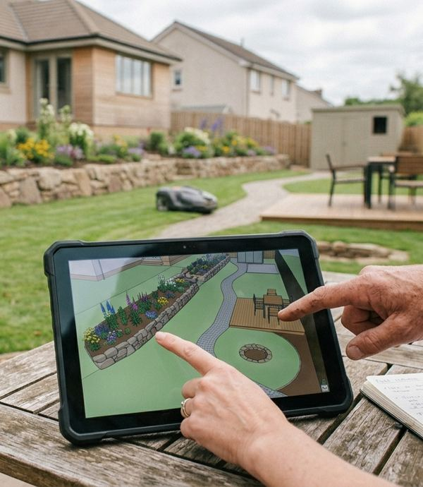
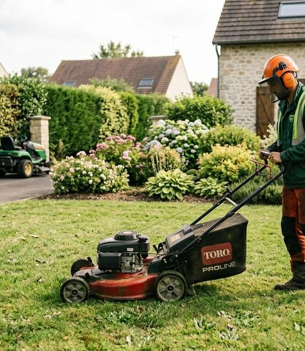
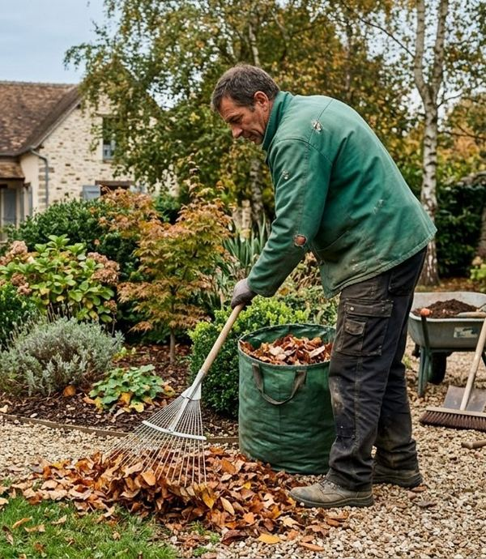
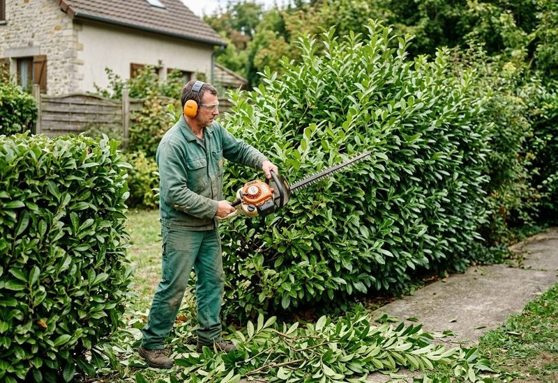
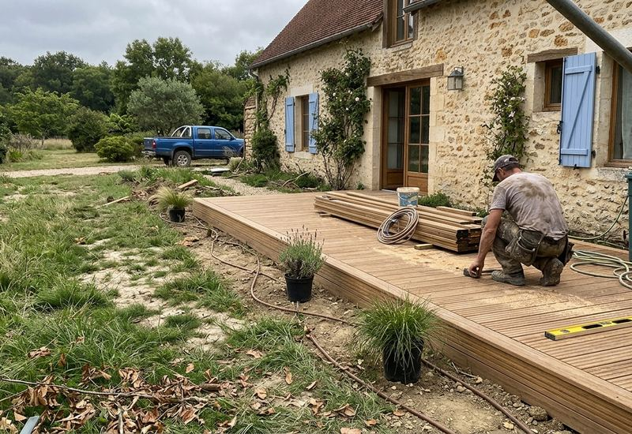
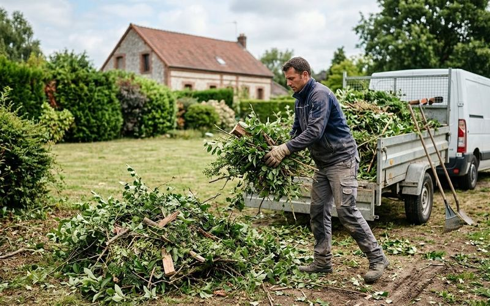
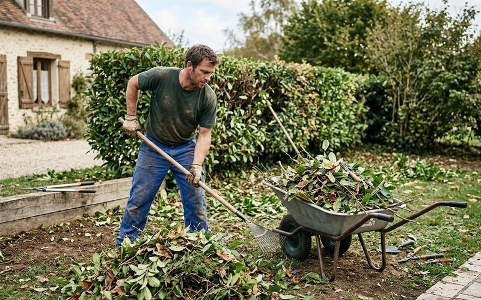
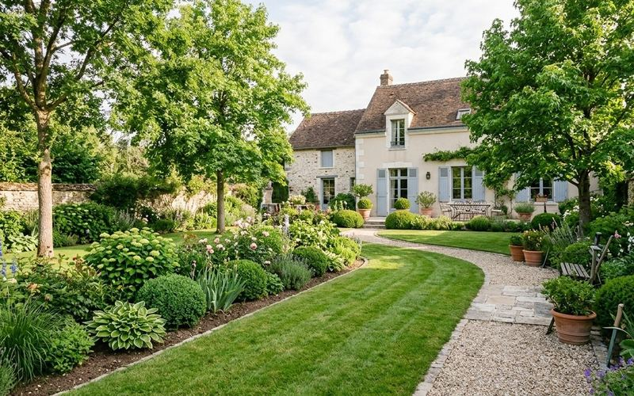

Création de jardin
Conception et aménagement de votre espace vert, selon votre terrain et vos envies.
Création de jardin, plantation, entretien, tonte et taille, aménagement extérieur : Coralie Michel Paysage accompagne votre projet à Bullion et dans les environs.



Conception et aménagement de votre espace vert, selon votre terrain et vos envies.
Arbustes, massifs et végétaux installés avec soin.
Un suivi régulier pour garder un jardin net et agréable.

La tonte et la taille gardent votre jardin net, saison après saison. Décrivez votre terrain, vous obtenez un devis adapté.

Un extérieur bien pensé prolonge la maison. Parlez-nous de l’espace à aménager, nous étudions le projet avec vous.



Un appel suffit pour décrire votre projet.
© Coralie Michel Paysage · Bullion (78) · 06 70 79 02 30 · Maquette de démonstration